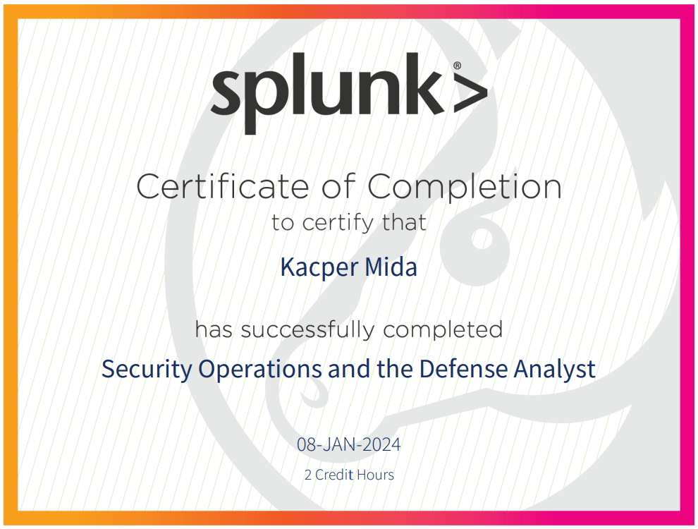

Kolejny certyfikat Splunk zdobyty!
2024-01-08
Dzisiaj ukończyłem kurs i otrzymałem certyfikat z zakresu Security Operations and Defense Analyst na platformie Splunk. Podczas tego szkolenia poznałem praktyczny wymiar pracy w Centrum Operacji Bezpieczeństwa (SOC) oraz miałem okazję zapoznać się z historiami i doświadczeniami trzech profesjonalistów, którzy pracowali na tym stanowisku. Dzielili się oni swoimi codziennymi obowiązkami oraz przekazali cenne wskazówki, które sami chcieliby usłyszeć na początku swojej kariery.
